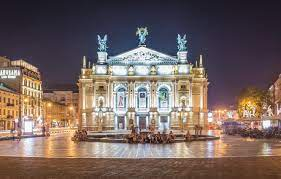

1. Львів – сьоме за розміром місто України. Тут живе майже 740 тисяч мешканців.
2. Львів – єдине місто в Україні, де є пам’ятники Леопольду фон Захер-Мазоху і Пабло Пікассо.
3. Щороку у Львові проходить близько 100 культурних, музичних, релігійних, гастрономічних фестивалів.
4. Торік Львів відвідало близько 1,6 млн туристів. За перше півріччя 2014 року – 600 тисяч туристів.
5. Кожен п’ятий у Львові - студент. Зокрема, у місті налічується близько 170 тис. студентів. А також 26 університетів. Найбільшими є ЛНУ імені Івана Франка та НУ "Львівська Політехніка".
2. Львів – єдине місто в Україні, де є пам’ятники Леопольду фон Захер-Мазоху і Пабло Пікассо.
3. Щороку у Львові проходить близько 100 культурних, музичних, релігійних, гастрономічних фестивалів.
4. Торік Львів відвідало близько 1,6 млн туристів. За перше півріччя 2014 року – 600 тисяч туристів.
5. Кожен п’ятий у Львові - студент. Зокрема, у місті налічується близько 170 тис. студентів. А також 26 університетів. Найбільшими є ЛНУ імені Івана Франка та НУ "Львівська Політехніка".